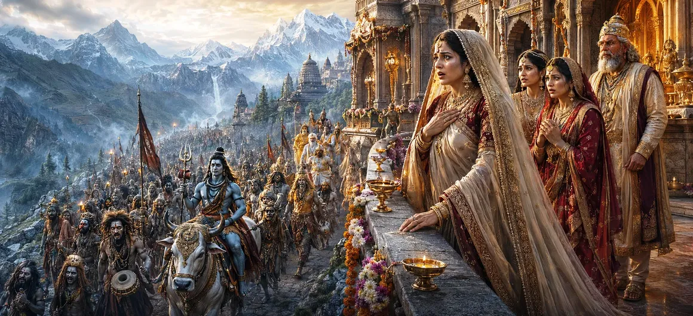

जैसे ही भगवान शिव की बारात हिमालय के महल के पास पहुंची, पूरे राज्य में उत्साह फैल गया। रानी मैना, अपनी प्यारी बेटी पार्वती के लिए चुने गए दूल्हे को देखने के लिए उत्सुक थी, बड़ी प्रत्याशा के साथ आगे आई। हालाँकि, उसने पहली बार जो देखा उसने उसे खुशी के बजाय आश्चर्य और भय से भर दिया।
मैना को शाही वैभव से घिरे एक सुंदर राजकुमार को देखने की उम्मीद थी। चूँकि पार्वती शक्तिशाली हिमालय की बेटी थीं, इसलिए उन्होंने एक ऐसे दूल्हे की कल्पना की जिसके पास महान सांसारिक सुंदरता और ऐश्वर्य हो।
जैसे ही जुलूस निकट आया, मैना ने एक आश्चर्यजनक सभा देखी। शिव के गण अनगिनत रूपों में प्रकट हुए - कुछ भयंकर, कुछ अजीब, और कुछ ऐसे जो उन्होंने पहले कभी नहीं देखे थे। उनके रूप ने रानी को हतप्रभ कर दिया।
मैना ने भगवान के साथ आत्माओं, तपस्वियों, दिव्य सेवकों और अलौकिक प्राणियों को देखा। जुलूस में रूपों की विविधता जबरदस्त लग रही थी और किसी भी शाही शादी के विपरीत जिसकी उसने कल्पना की थी।
मैना ने जुलूस को जितना अधिक देखा, वह उतनी ही अधिक चिंतित हो गई। उसकी प्रत्याशा धीरे-धीरे चिंता में बदल गई क्योंकि वह सोचने लगी कि क्या ऐसा दूल्हा वास्तव में उसकी बेटी के लिए उपयुक्त है।
उसने जो देखा उससे भ्रमित होकर, मैना ने विवाह व्यवस्था की समझदारी पर सवाल उठाना शुरू कर दिया। वह अभी तक शिव और उनके सेवकों की असामान्य उपस्थिति के पीछे छिपी दिव्य महानता को नहीं समझ सकी थी।
मैना के डर के बावजूद, जुलूस महल की ओर बढ़ता रहा। देवता प्रसन्न रहे, यह जानकर कि भगवान की सच्ची महिमा जल्द ही प्रकट होगी और सभी संदेह अंततः गायब हो जाएंगे।
ईश्वरीय सत्य को केवल बाहरी दिखावे से नहीं आंका जा सकता।
महानतम आध्यात्मिक ख़ज़ाने अक्सर सादगी या रहस्य के नीचे छिपे होते हैं।
जो चीज़ सांसारिक दृष्टि से भयावह लगती है उसका गहरा आध्यात्मिक महत्व हो सकता है।
जबकि मैना को यह समझने में संघर्ष करना पड़ा कि वह क्या देख रही है, देवता शांत और प्रसन्न रहे। वे जानते थे कि शिव के सेवक सृष्टि की विशालता का प्रतिनिधित्व करते हैं और भगवान सभी प्राणियों को बिना किसी भेदभाव के स्वीकार करते हैं। यह असामान्य जुलूस अपने आप में दिव्य ज्ञान का एक पाठ था।
मनुष्य अक्सर रूप-रंग, हैसियत या बाहरी सुंदरता से निर्णय लेते हैं। मैना का अनुभव हमें याद दिलाता है कि सच्ची महानता समझ और ज्ञान के माध्यम से खोजी जाती है। ईश्वर अक्सर सामान्य अपेक्षाओं से परे जाते हैं और हमें सतही छापों से परे देखने के लिए आमंत्रित करते हैं।
मैना की प्रतिक्रिया वास्तविक मातृ स्नेह से उत्पन्न हुई। वह पार्वती के लिए केवल सर्वोत्तम की कामना करती थी और इसलिए एक भयानक बारात के रूप में दिखाई देने वाली घटना से परेशान महसूस करती थी। उनकी चिंता एक प्यारी माँ की स्वाभाविक भावनाओं को दर्शाती थी।
हालाँकि मैना का दिल संदेह से भरा था, लेकिन कहानी पूरी नहीं हुई थी। वह क्षण निकट आ रहा था जब भगवान शिव भय को आश्चर्य और भक्ति में बदलते हुए, अतुलनीय सुंदरता और दिव्य चमक का एक रूप प्रकट करेंगे।
"आँख रूप को देखती है, परन्तु बुद्धि भीतर छिपे सत्य को पहचान लेती है।"
रानी मैना शिव की बारात के विचित्र और भयानक रूप को देखकर अभिभूत हो गईं। भगवान की सच्ची महिमा को समझने में असमर्थ, वह परेशान और अनिश्चित रहती है। यह देखने के लिए अगले अध्याय को जारी रखें कि कैसे भगवान शिव अपने भव्य और सुंदर रूप को प्रकट करते हैं, सभी भय और संदेह को दूर करते हैं।